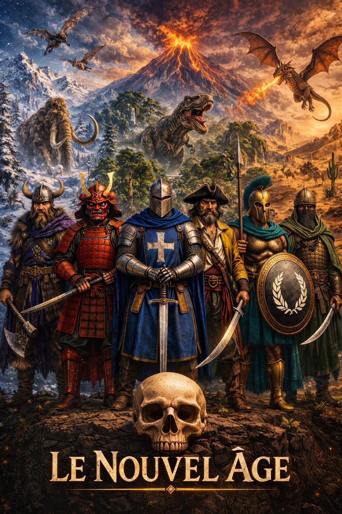
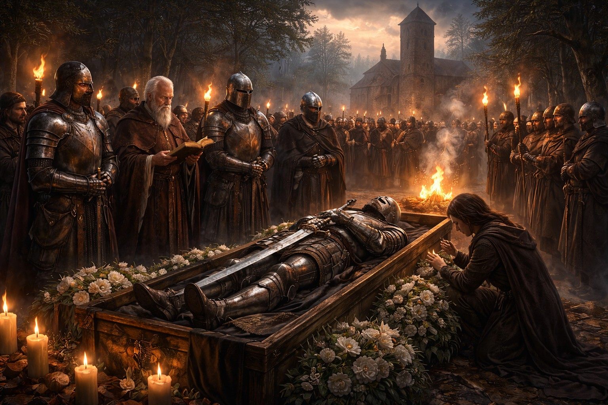
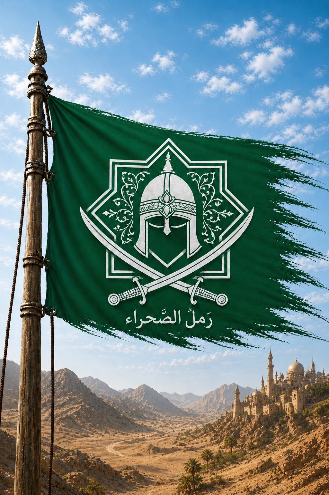
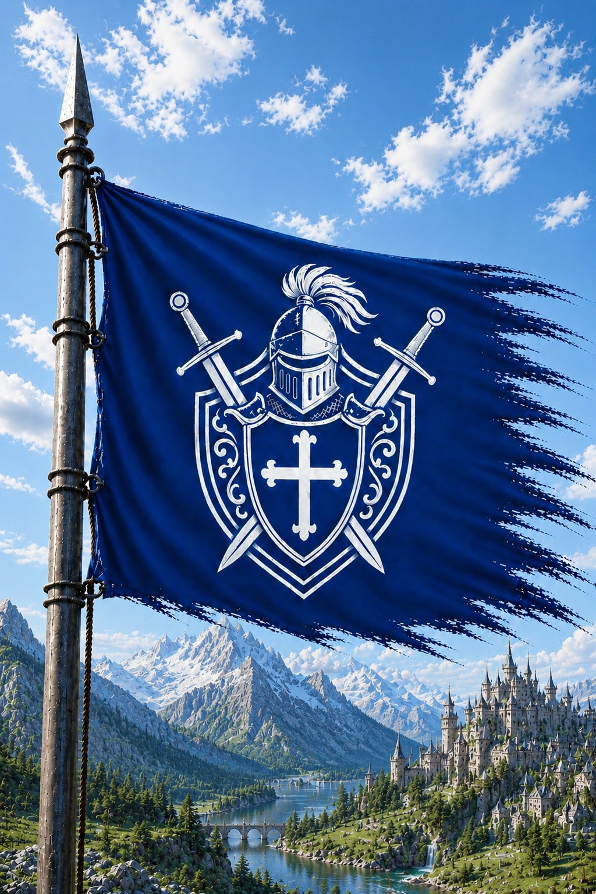
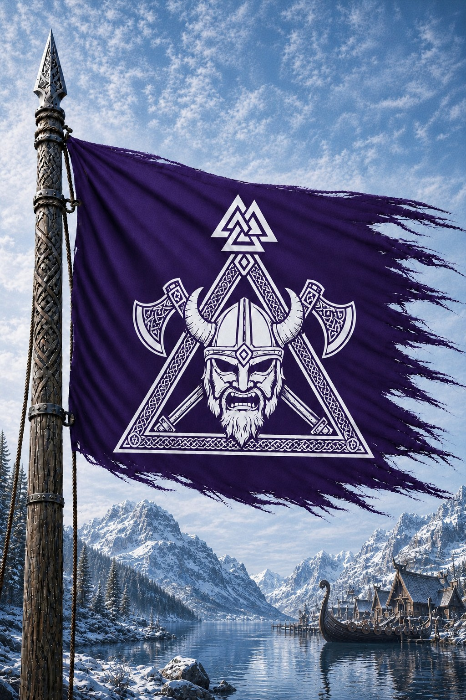
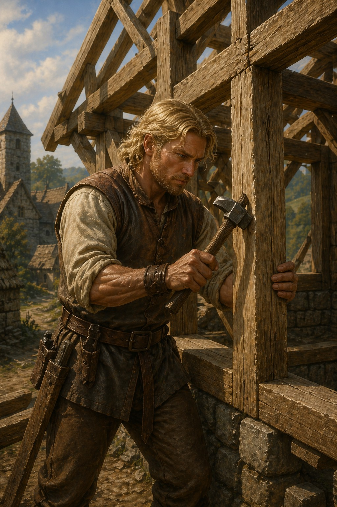
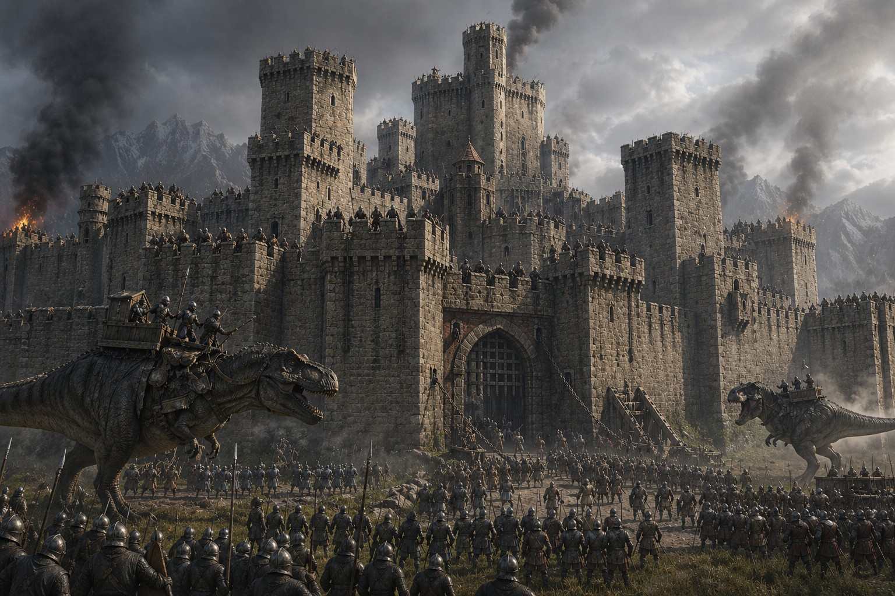
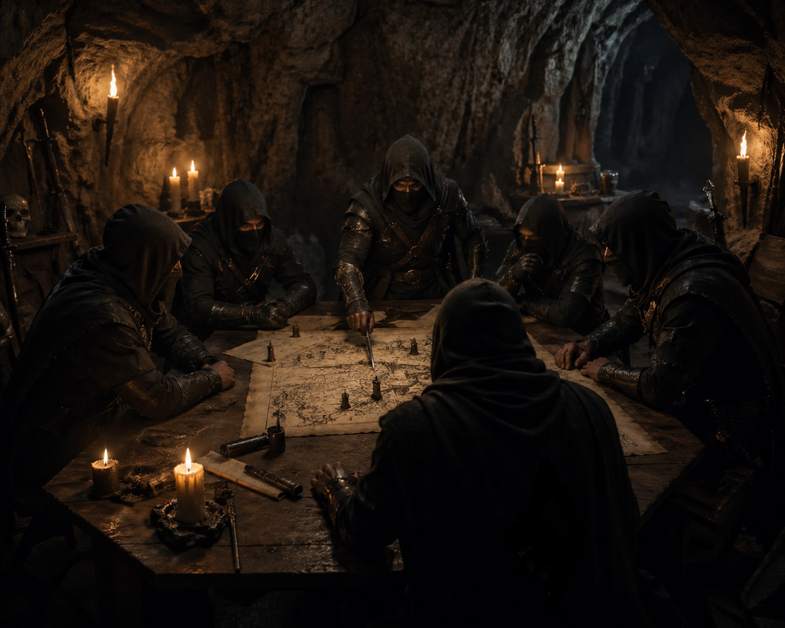
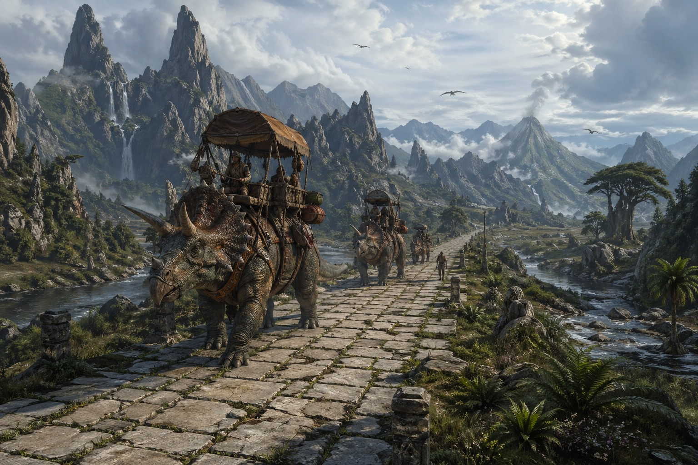
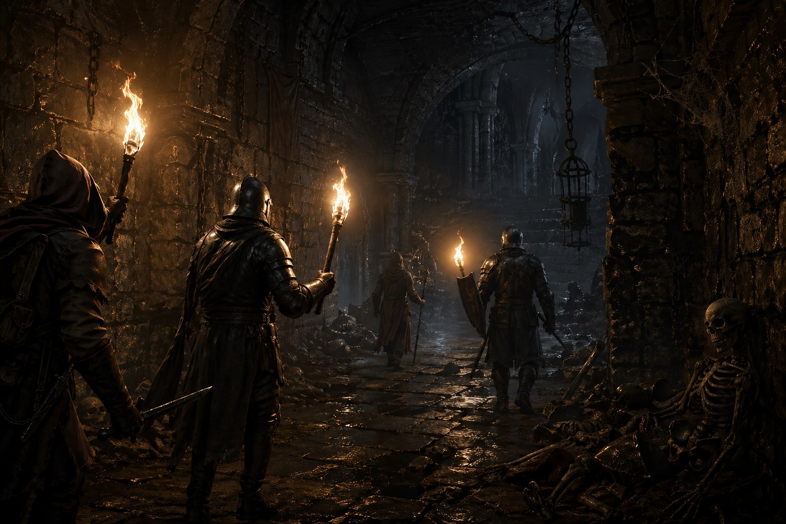

Rouge
Shintai
Japon féodal

Le Nouvel Âge RP ARK
Un guide complet pour comprendre vos libertés, vos responsabilités et les systèmes qui donnent vie au monde.
Mode d’emploi
Chapitre 01
Le projet, son univers et la place des joueurs.
Le serveur se déroule dans un monde d'heroic fantasy né après un cataclysme. Les vestiges d'une ancienne civilisation côtoient une nature redevenue sauvage, peuplée de créatures mythiques, de dinosaures préhistoriques et de bêtes légendaires.
Les survivants sont regroupés en six royaumes jouables. Chacun possède sa culture, ses croyances, ses divinités et sa propre vision du monde. Ces royaumes s'affrontent, négocient, s'allient ou se trahissent pour contrôler les terres, les ressources et les secrets de l'ancien monde.
Le serveur est une aventure évolutive : les saisons font progresser l'histoire globale et les événements scénarisés bouleversent l'équilibre des royaumes.
L'apparition de menaces, de dieux, de titans ou de figures légendaires peut influencer durablement le lore et le gameplay RP.
Chaque action des joueurs peut avoir un impact sur le monde : le RP façonne réellement l'histoire du serveur.
Chapitre 02
Les bases communes à connaître avant de jouer.
Les règles et informations ne sont pas là pour être dissuasives ni pour gâcher l'aventure. Elles fixent les limites et les possibilités afin que chacun joue sereinement.
Le respect du règlement est obligatoire pour assurer le bon fonctionnement du serveur.
HRP — Le hors role-play désigne tout ce qui n'est pas dit ou fait par votre personnage en jeu.
Métagaming — Utiliser en RP une information obtenue en HRP. Cette pratique est interdite.
Powergaming — Réaliser ou imposer des actions irréalistes, ou créer un personnage qui sait tout faire et ne possède aucun défaut.
Freekill — Tuer un joueur sans raison RP valable. Cette pratique est interdite.
Pain RP — Jouer la douleur et les conséquences des blessures reçues par le personnage.
Force RP — Forcer un joueur à agir d'une seule manière sans lui laisser d'alternative RP raisonnable. Les règles du serveur ne sont pas concernées.
Fear RP / No Fear — Le personnage doit craindre les dangers crédibles. Attaquer seul un dragon à mains nues est un exemple de No Fear.
Un salon est prévu pour vous présenter et parler de vous.
Chaque salon a une fonction précise. Les messages hors sujet doivent être placés dans le salon approprié.
Le salon humoristique n'autorise pas les contenus susceptibles de blesser les autres joueurs. Chacun reste responsable de ses publications.
La publicité peut être publiée après autorisation d'un administrateur.
Les références exactes des salons restent disponibles sur le Discord du serveur.
Le langage vulgaire ou agressif est possible uniquement en RP et lorsqu'il est justifié par la scène, le conflit ou le caractère du personnage.
Cette tolérance s'applique uniquement en jeu et jamais aux échanges HRP ou Discord.
Les menaces, insultes, provocations, humiliations et manques de respect envers un autre joueur sont interdits en HRP.
Même en cas de conflit RP, les joueurs doivent se respecter. En cas de problème, contactez rapidement l'administration.
Tout manquement peut entraîner une sanction proportionnelle à sa nature et à sa gravité.
Échelle habituelle : rappel au règlement, avertissement, bannissement temporaire, puis bannissement permanent.
Trois rappels peuvent entraîner un avertissement. Trois avertissements peuvent entraîner un bannissement temporaire.
Une faute grave peut conduire directement à un bannissement permanent, sans passer par les étapes précédentes.
Toute triche, exploitation de glitch ou utilisation volontaire d'une faille doit être signalée à l'administration.
Chapitre 03
Les règles qui encadrent le RP, les conflits et l'économie.
Le role-play consiste à incarner pleinement un personnage cohérent avec le lore, son histoire, son rang, ses qualités et ses défauts. Le joueur privilégie la logique de son personnage plutôt que l'optimisation ou la victoire à tout prix.
Chaque joueur doit connaître et comprendre la différence entre RP et HRP.
Une information obtenue en HRP ne doit jamais être utilisée en jeu : c'est du métagaming.
Ne mêlez pas les conflits réels à l'aventure. En jeu, vous incarnez le personnage que vous avez créé.
Le serveur intègre un système d'illégalité qui ajoute une dimension politique, économique et RP. Deux activités principales sont concernées : le trafic de schémas et le commerce de stupéfiants.
Un schéma obtenu dans un camp, sur une créature ou dans un donjon doit normalement être remis au gouvernement du royaume. Une compensation peut être accordée selon les lois locales.
Le gouvernement redistribue ensuite le schéma aux joueurs possédant le métier correspondant.
Un joueur peut conserver ou vendre lui-même un schéma, mais cet acte devient illégal aux yeux de son royaume.
Les stupéfiants peuvent être trouvés ou achetés auprès de trafiquants PNJ. Ils accordent des bonus temporaires mais provoquent des malus, une dépendance et une dégradation de la santé.
Le trafic de schémas ou de stupéfiants expose le personnage aux sanctions prévues par les lois de son royaume.

La mort RP correspond à la disparition définitive d'un personnage. Elle ne doit pas être confondue avec une simple mort technique lorsque les points de vie tombent à zéro.
La mort RP rend les choix crédibles et rappelle que les actions peuvent affecter l'avenir des autres joueurs et du monde.
Elle s'applique lorsqu'un joueur tue un autre personnage dans un contexte RP légitime : dispute, combat, agression ou crime.
Une mort causée par un monstre, un PNJ, un bug ou un accident n'est pas RP, sauf si une scène ou un événement encadré le prévoit.
Pendant une guerre, chaque joueur possède trois vies. Ces morts représentent des blessures de combat. Les dirigeants ne disposent que d'une seule vie.
Toute mort RP doit être signalée à l'administration par ticket.
Le vol est autorisé uniquement pour un personnage possédant un rôle cohérent : bandit, pirate ou membre de la guilde des voleurs.
Il est interdit de dépouiller totalement une victime ou de la tuer après le vol, sauf en cas de légitime défense.
Les banques des royaumes ne peuvent jamais être volées, y compris pendant un pillage de guerre.
Le chat vocal du jeu est le moyen de communication principal afin de préserver l'immersion.
Le chat écrit est autorisé en cas de problème de microphone. Une explication RP, comme une toux, peut justifier cette limitation.
Un joueur utilisant exclusivement l'écrit doit incarner un personnage muet et assumer cette particularité dans la durée.
Ignorer volontairement le chat vocal sans justification peut entraîner une sanction.
La monnaie du serveur repose sur les pièces d'or, d'argent et de bronze.
La monnaie ne peut pas être fabriquée dans un atelier. Elle s'obtient grâce aux activités de la carte et aux métiers.
Chaque royaume doit établir un système de salaires et de loyers pour accompagner son développement.
Les pièces peuvent provenir des salaires, du travail, des quêtes, des événements, des pillages ou des guerres.
Le troc reste autorisé, même s'il n'est pas le système économique central.
Chaque joueur doit obligatoirement rejoindre l'un des six royaumes disponibles.
Chaque royaume possède sa propre histoire, sa culture, ses traditions et son identité visuelle.
Japon féodal

Empire ottoman et terres arabiques

Chevaliers

Pirates

Vikings

Peuple grec d'inspiration romaine
Chapitre 04
Création du personnage, apparence, métiers et rôles.
Chaque joueur doit rédiger et publier la fiche RP de son personnage dans le salon prévu.
La fiche permet à l'administration de vérifier la cohérence du personnage avec l'univers du serveur.
L'accès au serveur reste bloqué tant que la fiche n'est pas complète et validée.
À sa création, le personnage en jeu doit correspondre aux informations de sa fiche RP : couleur de peau, taille et physique.
Le ciseau permet de modifier coiffure, barbe et physique pour représenter l'évolution du personnage.
Toute modification visuelle doit rester cohérente avec le RP et l'univers.
Les skins d'armure permettent d'affirmer l'identité visuelle du personnage, dans le respect du rôleplay.
Les soldats en service portent l'uniforme officiel de leur royaume ou de leur unité.
Hors service, les soldats peuvent utiliser d'autres apparences autorisées.
Les civils ne peuvent pas porter d'uniforme militaire, sauf entraînement officiel ou mobilisation en période de guerre.
Chaque joueur choisit un métier principal et un métier secondaire.
Les métiers créent des interdépendances et des interactions : pouvoir tout faire, c'est ne savoir rien faire.
Certains métiers sont plus pratiques ou efficaces selon les territoires et les besoins des royaumes.
Les aptitudes décrites dans les fiches de métiers s’exercent toujours dans le respect des règles générales du serveur et des lois propres à chaque royaume.
En plus de son métier, un personnage peut exercer un rôle légal ou clandestin : dirigeant, assassin, gladiateur, sorcier, vampire, loup-garou, contrebandier, chaman, journaliste, mendiant, prêtre, professeur, comédien, espion, bandit, trafiquant, etc.
Les rôles sont facultatifs et leur nombre n'est pas limité à une liste fermée.
Seuls les administrateurs doivent obligatoirement être informés d'un rôle clandestin.
Le rôle n'a pas besoin d'être indiqué publiquement sur la fiche RP.
Un métier est normalement rémunéré ; un rôle ne l'est pas nécessairement.
Chapitre 05
Bâtiments, navires, plateformes et forteresses.

La taille d'une construction dépend de sa fonction : résidence, taverne, bâtiment officiel, arène ou bâtiment royal.
Toute construction doit rester cohérente avec son activité et respecter les limites définies pour sa catégorie.
Les métiers disposent de structures dédiées : fermes, forges, enclos, ateliers et autres bâtiments fonctionnels.
Chaque royaume possède un style architectural et des skins propres. Les constructions doivent préserver cette identité visuelle.

Les forteresses doivent être construites en pierre et être suffisamment grandes pour accueillir troupes, réserves et engins de siège.
Elles doivent occuper des positions stratégiques, notamment aux frontières, pour contrôler les accès et ralentir les invasions.
Vanloria, Erythros, Falkheim et Shintai peuvent posséder deux forteresses chacun. Nerethis et Asharun peuvent en posséder jusqu'à trois.
Une forteresse représente un bastion militaire et non un simple bâtiment décoratif.
Chapitre 06
Organisation des tribus, alliances et guildes.
Chaque royaume crée une tribu principale portant le nom du royaume et de sa capitale.
Lorsqu'un village est fondé, une nouvelle tribu distincte doit être créée avec le nom du royaume et du village.
La tribu d'un village doit être alliée à la tribu principale de la capitale.
Chaque tribu est limitée à 100 joueurs. Les royaumes doivent anticiper leur organisation et leur expansion.
Les tribus de villages d'un même royaume doivent être alliées à la tribu principale.
Des royaumes différents peuvent former une alliance politique, économique ou militaire.
Les dirigeants doivent définir les termes de l'accord, puis officialiser l'alliance entre les tribus concernées en jeu.

L'ouverture des guildes dépend du nombre de joueurs actifs afin de préserver leur utilité et leur équilibre.
Une spécialité ne peut être représentée que par une seule guilde : assassins, guerriers, mages, voleurs, etc.
Une guilde accueille 5 joueurs au premier rang, 8 au deuxième et 10 au troisième.
Les guildes reposent sur des accords souvent discrets ou secrets. Seuls leurs membres et l'administration connaissent obligatoirement leur existence.
Chapitre 07
Créatures, PNJ, ressources, décors et marchands.
La population de créatures sauvages est volontairement réduite afin de rendre les rencontres plus rares et plus crédibles.
Seuls les joueurs possédant le métier de Dompteur peuvent apprivoiser les créatures de la carte.
Chaque royaume possède une limite de créatures apprivoisées et doit choisir soigneusement ses possessions.
Le dompteur doit posséder la selle correspondante avant d'apprivoiser une créature, sauf si celle-ci n'en nécessite pas.
Les créatures sont classées par tiers selon leur puissance, leur rareté et leur utilité.
Certaines créatures sont exclusives à un royaume et se débloquent uniquement grâce à ses paliers de progression.
Des PNJ neutres ou agressifs occupent des habitations isolées, des villages et d'autres lieux de la carte.
Les PNJ peuvent être apprivoisés pour participer aux tâches quotidiennes ou rejoindre une armée.
Les PNJ apprivoisés constituent la majeure partie des forces militaires et peuvent être recrutés sans limite numérique annoncée.
Selon les lois du royaume, les joueurs peuvent attaquer certains villages autonomes appartenant aux Dissidents.
Capitales et villages doivent accueillir des PNJ en mode neutre, circulant librement sans attaquer les visiteurs étrangers.
Les ressources soutiennent la construction, l'artisanat, les quêtes et la progression des royaumes.
Certaines ressources sont exclusives à un territoire et interviennent dans les fabrications avancées, les quêtes et les paliers.
Il est interdit de bloquer, privatiser ou construire sur une zone contenant des ressources spéciales.
Les lois d'un royaume peuvent interdire aux étrangers de récolter sur son territoire. Ces décisions peuvent évoluer avec la diplomatie.

Ruines, grottes et décors immersifs sont répartis sur la carte pour enrichir l'exploration et raconter l'ancien monde.
La grande route est une création originale du serveur. Elle traverse le monde et relie royaumes, futures capitales et villages.
Il est interdit de construire sur ces décors, de les bloquer ou de les modifier. Ils doivent rester intacts et accessibles.
Six villages marchands sont répartis sur la carte, à raison d'un par royaume.
Ils vendent des objets de base : armes, outils, structures, selles, consommables et ressources essentielles.
Les marchands servent de solution de secours lorsqu'aucun artisan n'est disponible. Ils ne remplacent pas l'économie entre joueurs.
Les prix des PNJ sont généralement deux fois plus élevés que ceux pratiqués entre joueurs.
Chapitre 08
Saisons, événements, quêtes, donjons, paliers et guerres.
Une nouvelle saison débute tous les deux mois avec une intrigue, une faction ennemie et des récompenses uniques.
Des événements et quêtes apparaissent à différents moments de la semaine : attaque, défense, menace, mission temporaire, enquête ou découverte de lore.
Les saisons font progresser l'histoire globale et proposent des récompenses exclusives : objets, trophées ou créatures inédites.
Plusieurs événements peuvent avoir lieu chaque semaine. Ils sont annoncés à l'avance pour permettre aux joueurs de s'organiser.
Ils peuvent proposer attaques, défenses, aide aux PNJ, primes, boss, créatures légendaires, chasses au trésor ou intrigues locales.
Ces activités enrichissent l'univers sans modifier le monde aussi profondément qu'une saison.
Des PNJ et des personnages incarnés par l'administration proposent des missions dans différentes régions.
Les dialogues des PNJ doivent être lus attentivement pour comprendre leurs besoins et les objectifs.
Les missions peuvent demander de fabriquer ou récupérer un objet, enquêter, sauver un prisonnier, traquer une cible, livrer une personne ou transporter des marchandises.
Les quêtes administratives peuvent être davantage scénarisées et proposer une immersion plus poussée.

Chaque semaine, l'un des six royaumes est sélectionné pour explorer l'un des six donjons de la carte.
Les donjons existent en trois tailles — petit, moyen et grand — et possèdent leur propre architecture.
Une faction ennemie est choisie parmi neuf possibilités. Six donjons et neuf factions produisent 54 combinaisons possibles.
Des coffres de différentes raretés sont répartis dans les salles. Le plus précieux se trouve après le boss final.
Terminer les six donjons contre une même faction débloque une récompense exceptionnelle liée à cette faction.
Les créatures et PNJ apprivoisés ne peuvent pas entrer dans les donjons. Seuls les joueurs participent.
Les paliers représentent la progression principale des royaumes et débloquent créatures uniques, villages et nouvelles possibilités.
Pour valider un palier, le royaume accomplit ses objectifs, rassemble les ressources demandées, puis son dirigeant contacte l'administration.
Les créatures spéciales ne se débloquent pas instantanément : des événements dédiés les font apparaître après le passage du palier.
Les dompteurs peuvent alors tenter de les apprivoiser et obtenir leur selle au même moment.
Les guerres sont des conflits structurés, stratégiques et encadrés entre royaumes.
Pendant une guerre, les joueurs disposent de trois vies. Les dirigeants n'en possèdent qu'une seule.
Même en guerre, les banques des royaumes ne peuvent pas être pillées.
Les conflits RP ne justifient jamais un comportement irrespectueux en HRP.
Chapitre 09
Les premières étapes lors de l'ouverture ou d'une nouvelle arrivée.
À l'ouverture, les joueurs apparaissent sur les plages de leur royaume. Des équipements et créatures abandonnées les aident à survivre.
Le premier objectif consiste à regrouper les membres du royaume, choisir un campement initial puis préparer la future capitale.
Chaque royaume désigne ensuite son dirigeant selon sa culture : élection, duel ou autre méthode cohérente.
Au début de l'aventure, l'unité et l'entraide sont essentielles pour établir des bases solides.
Les joueurs arrivant plus tard doivent rejoindre la capitale de leur royaume afin de s'intégrer.
En raison des points d'apparition du jeu, Erythros et Asharun peuvent commencer sur les plages de Nerethis ou Falkheim. Ils doivent rejoindre leur territoire sans récupérer les créatures abandonnées de ces royaumes.
L'utilisation de la grande route est fortement conseillée pour voyager entre les territoires.
Chapitre 10
Validation du règlement et accès au serveur.
Chaque joueur doit lire et accepter l'intégralité du règlement.
Un entretien avec un administrateur est obligatoire pour les nouveaux joueurs. Il permet de se présenter et de poser ses questions.
La fiche RP doit être copiée depuis le modèle Discord, complétée, publiée puis validée par un administrateur.
L'accès au serveur reste fermé tant que le règlement n'est pas accepté et que la fiche RP n'est pas validée.
En cas de doute, posez votre question dans le salon Discord prévu ou ouvrez un ticket auprès de l'administration.
Prêt à commencer ?
L’accès reste réservé aux joueurs ayant accepté le règlement, réussi l’entretien administratif et obtenu la validation de leur fiche RP.